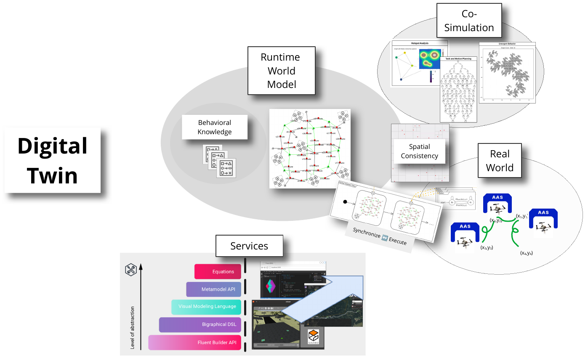

Methodology
Combining Digital Twins and Categorical Algebra

Reference:
- D. Grzelak, "Programming Drone Collectives: Towards Safe Plug-And-Play Modularity," in Proceedings of the 1st German Robotics Conference (GRC), Nürnberg, Germany: Robotics Institute Germany, Mar. 2025. Available: https://ras.papercept.net/conferences/conferences/GRC25/program/GRC25_ContentListWeb_1.html#thga_58. — Standalone video contribution (demo video, abstract, and poster)
- Poster
- Using the defintion of a Digital Twin after: Braun, Stefan; Dalibor, Manuela; Jansen, Nico; Jarke, Matthias; Koren, István; Quix, Christoph; Rumpe, Bernhard; Wimmer, Manuel; u. a.: Engineering Digital Twins and Digital Shadows as Key Enablers for Industry 4.0. In: Vogel-Heuser, B. ; Wimmer, M. (Hrsg.): Digital Transformation: Core Technologies and Emerging Topics from a Computer Science Perspective. Berlin, Heidelberg: Springer, 2023 — ISBN 978-3-662-65004-2, S. 3–31